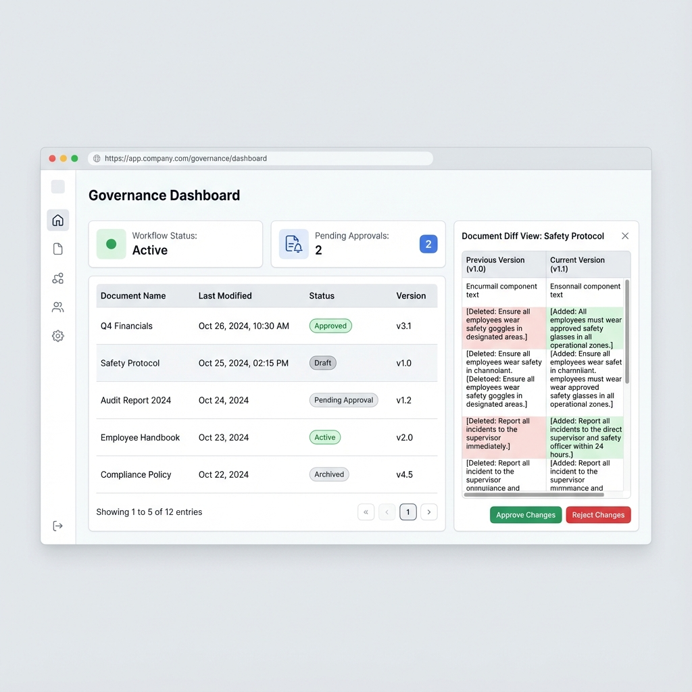
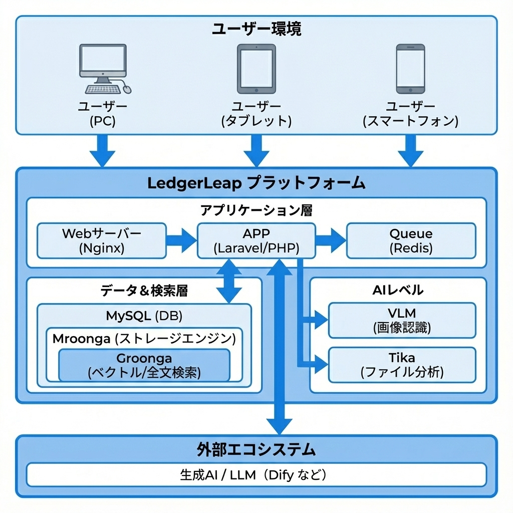

LedgerLeap
次世代 AI 台帳プラットフォーム
現場のムダをなくし、確かなデータで組織を動かす
次世代 AI 台帳プラットフォーム
次世代 AI 台帳プラットフォーム
Point: 「ただ記録する」から「信頼できるデータを積み上げる」へ。正確なデータが AI の精度を高め、組織全体の意思決定を加速させる好循環を生み出します。
型番・IDなどを正確にヒット。日本語の言い回しや同義語にも対応。
「不具合」→「故障」もヒット。添付ファイルの中身まで検索対象。
頻繁に参照されるデータや、承認待ちの緊急案件を自動的に上位へ表示。
AI が帳票レイアウトを理解。データと座標を構造化データ(JSON)として正確に抽出します。
📊 データ活用の自動化:
抽出された値は検索、要約、他システム連携の基盤として即座に活用可能です。
画像証跡と解析結果をセットで管理し、情報の透明性を高めます。
Dify、Claude など外部の AI ツールから台帳データを安全に参照・活用可能。
機材の QR をスキャンするだけで履歴確認から点検報告までを即時開始。
型番や管理番号などを自動でリンク化。関連するエビデンスへ即座に移動。
「あのポンプの図面、どこだっけ...？」
ファイル名だけでは分からず、大量のPDFを目視確認していた。


「紙の検査表を後からPCに手打ち転記している」「現場での入力負担が大きく、報告漏れのリスクがある」
「監査時に、誰がいつ承認したデータなのかすぐに出せない」
「機密仕様書が全社員に見える状態になっており、セキュリティリスクがある」


マルチテナント設計により、同一システム内で各組織の独立性とセキュリティを完全に担保します。
数百万件のデータから意味ベースで高速検索。言い回しの違いに左右されない情報発見を実現。
画像の構造化解析や文書テキスト化をバックグラウンドで並列処理。アップロード完了を待たずに次の作業が可能。
標準APIを通じて外部AIエージェントと連携。台帳データを組織の共有知識として最大限に活用できます。
複数組織・フォルダ管理・アクセス権限・承認ワークフロー
高速検索・意味検索・画像認識による書類の自動テキスト化
外部 AI ツール連携・QR コード入力・型番の自動リンク
変更履歴・元に戻す機能・監査ログ・自動並び替え
記録作成時の下書き生成・項目の自動提案・書類内容の要約入力
チャット等から台帳へ直接データを記録・抽出・自律制御
利用状況の可視化・異常検知・定期レポートの自動生成
💬 カスタマイズ対応: 業種や特有の業務フローに合わせた個別開発も承ります。
業務の質を変えるプラットフォーム。
データ管理のコストを下げ、本来の仕事へ。
意味まで理解する検索で「探す時間」をゼロへ
現場業務の入力コストを最小限にする自動化
承認フロー＋履歴管理で AI が学ぶデータを守る
外部 AI ツールから台帳データを直接活用